同一个事物，从不同的视角去看，会有不同的理解。而任何一个视角看到的，都不是事物的全部，任何一种解释，都无法完全描述这个事物。单纯用一种方式去理解它，一定是片面的。只有从不同的层次、不同的角度去理解，我们的认知才能不断逼近这个事物的真相。
本文借鉴多位博主的研究成果，企图整理从不同的角度对齐次坐标的理解，帮助感兴趣的朋友更透彻地理解齐次坐标到底是什么，有什么意义，如何应用。
齐次坐标引入
Problem: Two parallel lines can intersect.
欧氏几何空间
In Euclidean space (geometry) - two parallel lines on the same plane cannot intersect, or cannot meet each other forever.透视空间 - 无穷远处相交
In projective space - Finally, the two parallel rails meet at the horizon, which is a point at infinity.
(Actually, Euclidean geometry is a subset of projective geometry
The Cartesian coordinates of a 2D point can be expressed as (x, y).
What if this point goes far away to infinity? The point at infinity would be (∞,∞), and it becomes meaningless in Euclidean space. The parallel lines should meet at infinity in projective space, but cannot do in Euclidean space.
Solution: Homogeneous Coordinates
Homogeneous coordinates are a way of representing N-dimensional coordinates with N+1 numbers.
(1, 2) becomes (1, 2, 1) in Homogeneous
If (1, 2) moves toward infinity, it becomes (∞,∞) in Cartesian coordinates. And it becomes (1, 2, 0) in Homogeneous coordinates.
We can express the point at infinity without using “∞”.
Why is it called “homogeneous”?
Homogeneous coordinates are scale invariant.
(1a, 2a, 3a) in Homogeneous coordinates is the same point as (1/3, 2/3) in Euclidean space.
These points are “homogeneous” because they represent the same point in Euclidean space (or Cartesian space).
Proof: Two parallel lines can intersect.

- if C ≠ D -> there is no solution
- if C = D -> two lines are identical (overlapped)
笛卡尔坐标系下，两平行线要么重叠，要么永不相交。
Rewrite the equations for projective space：
we have a solution, (x, y, 0)
two parallel lines meet at (x, y, 0), which is the point at infinity.
意义
从数学的角度讲：
- 区分向量和点
- 可以表示无穷远的点
- 易于进行 仿射变化（Affine Transformation）。提供了用矩阵运算把二维、三维甚至高维空间中的一个点集从一个坐标系变换到另一个坐标系的有效方法。
从现实意义的角度讲：
- 描述透视空间
- 区分不同位置的向量
区分向量和点
问题：笛卡尔坐标系下，三维坐标既可以表示向量，也可以表示点，从坐标上无法区分。
而实质上，向量和点是有区别的，点的位置是对这个基的原点o所进行的一个位移。
当我们在坐标系 xOy 中
- 用 (a,b) 定义一个向量 v 时，表示 v =ax +by
- 用 (a,b) 表示一个点 p 时，表示 p−o=ax +by
假若写下 (2,1)，如无附加说明，不能区别出它是向量还是点。
将点的表示重写为：
将向量的表示写为:
这样能够清晰地区分向量和点。数学家使用这种方式表示坐标 - 在n维向量（或坐标点）后面增加一维，这便是齐次坐标的思想。
通过如下方式可将三维坐标转换成齐次坐标：
- 把3D向量的第4个代数分量设置为0
- 把3D点的第4个代数分量设置为1
对于一个普通坐标的点P=(Px, Py, Pz)，有对应的一族齐次坐标(wPx, wPy, wPz, w)，其中w不等于零。
比如，P(1, 4, 7)的齐次坐标有(1, 4, 7, 1)、（2, 8, 14, 2）、（-0.1, -0.4, -0.7, -0.1）等等。
最后一个代数分量w称为比例因子
当w=0时，可解释为无穷远的“点”，其意义是描述方向（既然已经是“无穷远”了，其实际位置已经没有意义了，只有用于描述方向的意义）。因此，w=0时，该坐标表示一个向量。对该坐标进行平移变换，不会产生效果，计算过程如图：
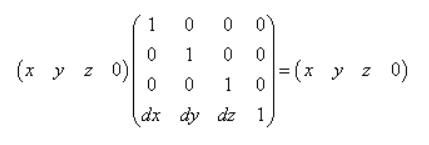
这也符合我们原先的认知：向量没有位置，只有大小和方向。
描述投影几何（ projective geometry）
用眼睛观察世界有一个特点，就是越远的物体看起来就越小，而且我们还能通过“越远越小”这种视觉效果估算距离。 这种现象被称为透视现象，同样的存在这种现象的空间被称为投影空间。
在笛卡尔空间中，两条平行线是永远不会相交的，但是在透视空间中，两条平行线会相交于一点，这是两种空间最大的区别。
Projective geometry has an extra dimension, called W, in addition to the X, Y, and Z dimensions. This four-dimensional space is called “projective space,” and coordinates in projective space are called “homogeneous coordinates.”
（x,y,z）在齐次空间中有无数多个点与之对应。所有点的形式是（wx,wy,wz,w），其轨迹是通过齐次空间原点的“直线”
An Analogy In 2D

The W dimension is the distance from the projector to the screen.
The value of W affects the size (a.k.a. scale) of the image.
Applying It To 3D
When W increases, the coordinate expands (scales up). When W decreases, the coordinate shrinks (scales down). The W is basically a scaling transformation for the 3D coordinate.
The usual advice for 3D programming beginners is to always set W=1 whenever converting a 3D coordinate to a 4D coordinate.
when you scale a coordinate by 1 it doesn’t shrink or grow, it just stays the same size.
When W=1 it has no effect on the X, Y or Z values.
For this reason, when it comes to 3D computer graphics, coordinates are said to be “correct” only when W=1.
- If you rendered coordinates with W>1 then everything would look too small, and with W<1 everything would look too big.
- If you tried to render with W=0 your program would crash when it attempted to divide by zero.
- With W<0 everything would flip upside-down and back-to-front.
Mathematically speaking, there is no such thing as an “incorrect” homogeneous coordinate. Using coordinates with W=1 is just a useful convention for 3D computer graphics.
Uses Of Homogeneous Coordinates In Computer Graphics
Translation Matrices For 3D Coordinates
In order to do translation, the matrices need to have at least four columns.
A four-column matrix can only be multiplied with a four-element vector, which is why we often use homogeneous 4D vectors instead of 3D vectors.
W的几何意义与投影有关，也只有投影变换矩阵影响到w的值。平移、旋转、缩放矩阵都不影响W。
The 4th dimension W is usually unchanged, when using homogeneous coordinates in matrix transformation. W is set to 1 when converting a 3D coordinate into 4D, and it is usually still 1 after the transformation matrices are applied, at which point it can be converted back into a 3D coordinate by ignoring the W. This is true for all translation, rotation, and scaling transformations, which are by far the most common types of transformations. The notable exception is projection matrices, which do affect the W dimension.
Perspective Transformation
Perspective is implemented in 3D computer graphics by using a transformation matrix that changes the W element of each vertex.
After the the camera matrix is applied to each vertex, but before the projection matrix is applied, the Z element of each vertex represents the distance away from the camera. Therefore, the larger Z is, the more the vertex should be scaled down. The W dimension affects the scale, so the projection matrix just changes the W value based on the Z value.
投影矩阵根据深度（Z）计算W值，W值影响缩放。
投影矩阵相乘之后，执行透视除法，把齐次坐标转换成W=1的形式。
After the perspective projection matrix is applied, each vertex undergoes “perspective division.” Perspective division is just a specific term for converting the homogeneous coordinate back to W=1, as explained earlier in the article.
After perspective division, the W value is discarded, and we are left with a 3D coordinate that has been correctly scaled according to a 3D perspective projection.
In OpenGL, perspective division happens automatically after the vertex shader runs on each vertex. This is one reason why gl_Position, the main output of the vertex shader, is a 4D vector, not a 3D vector.
Positioning Directional Lights
Points at infinity occur when W=0. Coordinates with W=0 can not be converted into 3D coordinates.
Directional lights
- point lights that are infinitely far away.
- the rays of light become parallel, and all of the light travels in a single direction.
W=1, then it is a point light.
W=0, then it is a directional light.
1 | if(lightPosition.w == 0.0){ |
仿射变换总结
旋转、缩放到平移
对于一个 2 维点 p=(x,y)，仿射变换（T）是线性变换（Ap）和平移变换（+t）的叠加:
T(p)=Ap+t
计算机图形学中的图形变换，实际上是在仿射空间中进行的
线性变换在欧式空间中可以表示为矩阵乘积形式，如旋转变换和缩放变换：
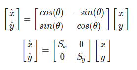
而平移变换
却不能用矩阵相乘的形式表达。
现在引入齐次坐标系表达 p~=(x,y,1)，（尺度不变性，实际上在高一维的空间映射到 w=1 平面, 这样计算后结果直接可导出到欧式空间）。可以将旋转变换和缩放变换表示为：
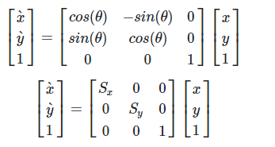
以二维向量为例，平移变换则为：
仿射变换的矩阵形式
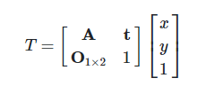
齐次坐标把各种变换都在统一了起来，不管怎样变换，变换多少次，都可以表示成一连串的矩阵相乘。任何三维坐标空间的转换，都可以用一个四维矩阵表示。
三维向量平移运算：
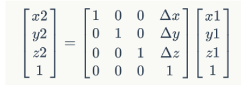
透视投影变换
正交投影矩阵
正交投影矩阵的视锥体是一个长方体[l,r][b,t][f,n]，我们要把这个长方体转换到一个正方体[-1,1][-1,1][-1,1]中，如图。

第一步平移，计算出长方体的中心点为[(l+r)/2,(b+t)/2,(f+n)/2]，然后将中心点移动到原点，矩阵为
第二步缩放，例如从[l,r]缩放到[-1,1]，缩放系数为2/(r-l)，所以矩阵为
所以正交投影矩阵Mortho = Mscale*Mtranslate
透视投影矩阵
透视投影的视锥体是一个四棱锥的一部分，其中近平面为z=n，远平面为z=f，我们要把这个视锥体转换到一个正方体[-1,1][-1,1][-1,1]中，可以先把远平面压缩，把视锥体压缩成一个长方体，然后再通过第二步中的正交投影矩阵就可以变换到正方体中，如图。
三个原则：
- 近平面的所有点坐标不变
- 远平面的所有点坐标z值不变 都是f
- 远平面的中心点坐标值不变 为(0,0,f)
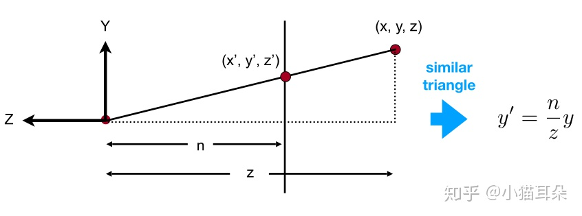
由三角形相似性，对于(x,y,z,1)一点，它在视锥体压缩以后坐标应该为(nx/z,ny/z,unknow,1)。
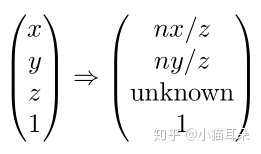
也就是我们现在需要找到一个矩阵Mpersp->ortho，使得上面的转换成立。
(x,y,z,1)与(kx,ky,kz,k!=0)这两个点是完全等价的点
需要找到矩阵Mpersp->ortho，使得上面的转换成立。
由（1）近平面的所有点坐标不变
对于第一二四行，我们写出等式
nx+0y+0n+01=x
0x+ny+0n+01=y
0x+0y+1n+01=1
很明显这是有问题的，因为n应该是任意常数，但是现在只有在n等于1时，一二四行的运算才成立
所以我们根据前面的方法，再把(x,y,n,1)都乘以一个n等价变为(nx,ny,nn,n)。
对于第一二四行，我们写出等式
nx+0y+0n+01=nx,
0x+ny+0n+01=ny,
0x+0y+1n+01=n
完美成立。现在我们可以安心的求第三行了。
设第三行的四个数分别为ABCD
可以获得等式 Ax+By+Cn+D = nn。
明显A=0,B=0
Cn+D = n*n (式1)
我们接下来考虑第三个原则，远平面的中心点坐标值不变 为(0,0,f)
同样为了保证之前求的矩阵一二四行成立，我们需要把(0,0,f,1)写成(0,0,ff,f)
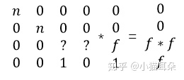
Cf+D = ff（式2）
联立式1式2，解得
C = n+f
D = -nf
终于，我们求得了Mpersp->ortho矩阵为
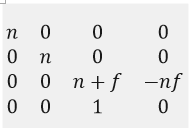
也就是通过这个矩阵，我们可以把原来的透视投影的视锥体压缩为正交投影的视锥体(长方体)
最后我们再乘上一开始求出来正交投影矩阵Morth就得到了透视投影矩阵
Mpersp = Mortho*Mpersp->ortho
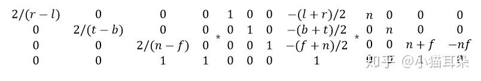
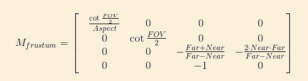
推导过程及代码：
http://ogldev.atspace.co.uk/www/tutorial12/tutorial12.html
After multiplying the vertex position by the projection matrix the coordinates are said to be in Clip Space and after performing the perspective divide the coordinates are in NDC Space (Normalized Device Coordinates).
渲染管线中坐标变换总结
坐标变换过程
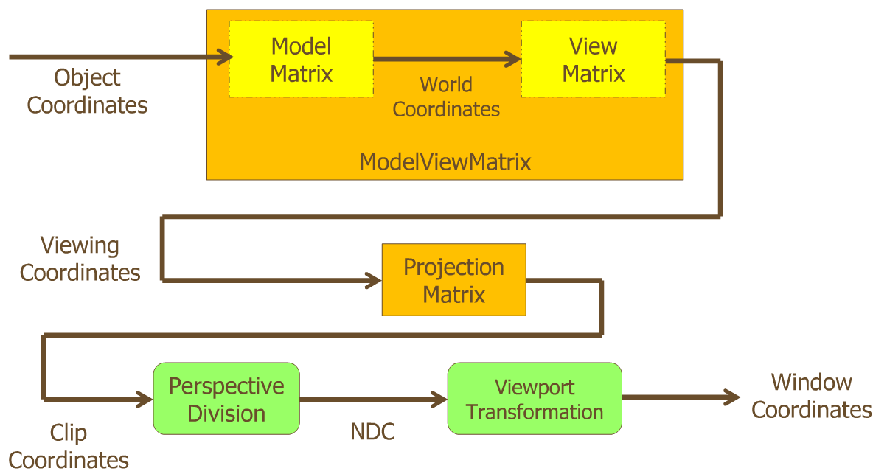
- Object Coordinate System: 也称作Local coordinate System，用来定义一个模型本身的坐标系。
- World Coordinate System: 3d 虚拟世界中的绝对坐标系，定义好这个坐标系的原点就可以用来描述模型的实现的位置，Camera 的位置，光源的位置。
- View Coordinate System: 一般使用用来计算光照效果。
- Clip Coordinate System: 对3D场景使用投影变换裁剪视锥。
- Normalized device coordinate System (NDC): 归一化设备坐标系
- Windows Coordinate System: 最后屏幕显示的2D坐标系统，一般原点定义在屏幕左上角。
MVP矩阵及使用
模型（Model）、观察（View）和投影（Projection）矩阵
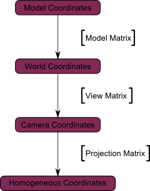
The Model matrix
We went from Model Space (all vertices defined relatively to the center of the model) to World Space (all vertices defined relatively to the center of the world).
The View matrix
We went from World Space (all vertices defined relatively to the center of the world, as we made so in the previous section) to Camera Space (all vertices defined relatively to the camera).
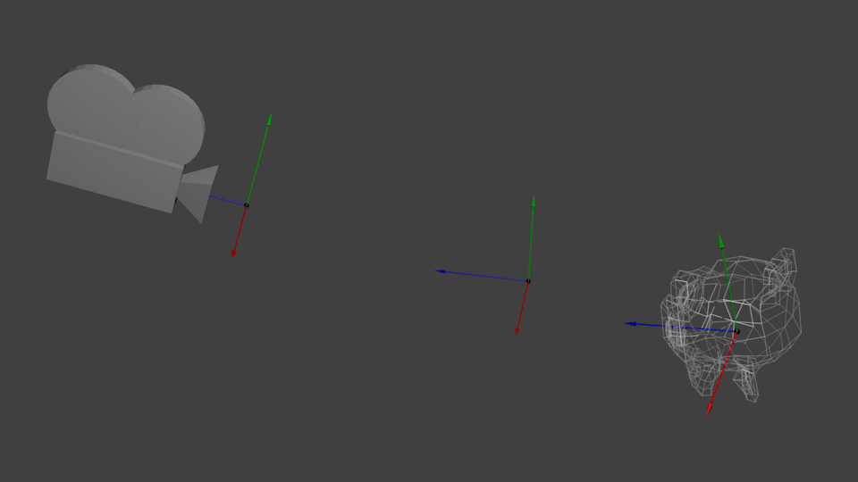
The engines don’t move the ship at all. The ship stays where it is and the engines move the universe around it.
The Projection matrix
We’re now in Camera Space. This means that after all theses transformations, a vertex that happens to have x==0 and y==0 should be rendered at the center of the screen. But we can’t use only the x and y coordinates to determine where an object should be put on the screen : its distance to the camera (z) counts, too ! For two vertices with similar x and y coordinates, the vertex with the biggest z coordinate will be more on the center of the screen than the other.
1 | // Generates a really hard-to-read matrix, but a normal, standard 4x4 matrix nonetheless |
We went from Camera Space (all vertices defined relatively to the camera) to Homogeneous Space (all vertices defined in a small cube. Everything inside the cube is onscreen).
Before projection, we’ve got our blue objects, in Camera Space, and the red shape represents the frustum of the camera : the part of the scene that the camera is actually able to see.
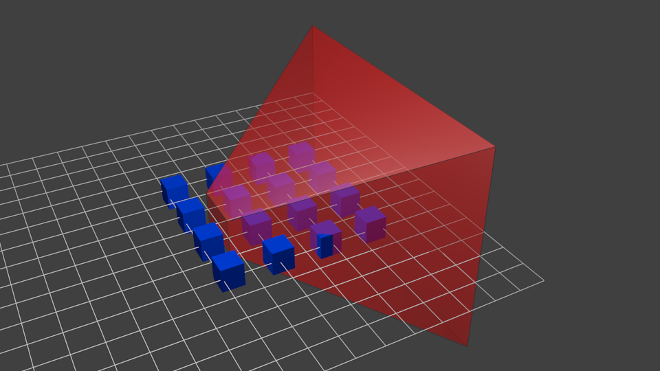
Multiplying everything by the Projection Matrix has the following effect :
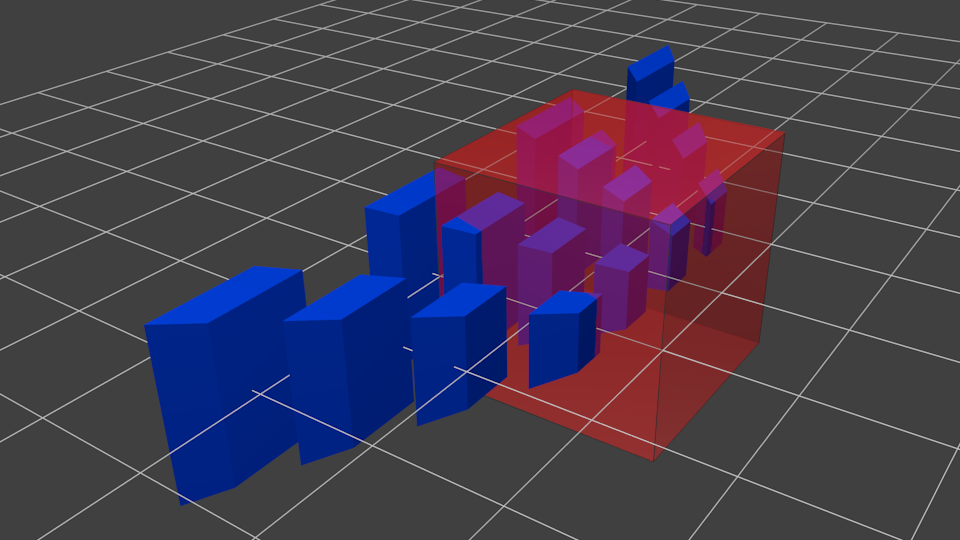
In this image, the frustum is now a perfect cube (between -1 and 1 on all axes, it’s a little bit hard to see it), and all blue objects have been deformed in the same way. Thus, the objects that are near the camera ( = near the face of the cube that we can’t see) are big, the others are smaller. Seems like real life !
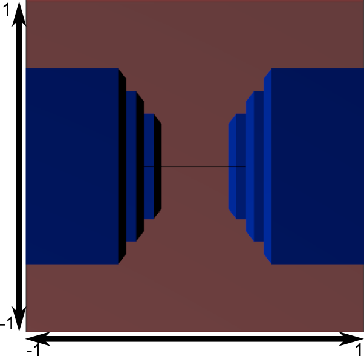
Another mathematical transformation is applied (this one is automatic, you don’t have to do it yourself in the shader) to fit this to the actual window size :
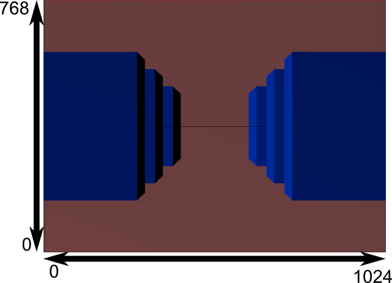
Ref
https://oncemore2020.github.io/blog/homogeneous/
http://www.songho.ca/math/homogeneous/homogeneous.html
https://zhuanlan.zhihu.com/p/110503121
https://blog.csdn.net/yinhun2012/article/details/79566148
https://www.tomdalling.com/blog/modern-opengl/explaining-homogenous-coordinates-and-projective-geometry/
https://zhuanlan.zhihu.com/p/122411512
http://www.opengl-tutorial.org/cn/beginners-tutorials/tutorial-3-matrices/
http://www.guidebee.info/wordpress/?m=201106

...
...
This is copyright.